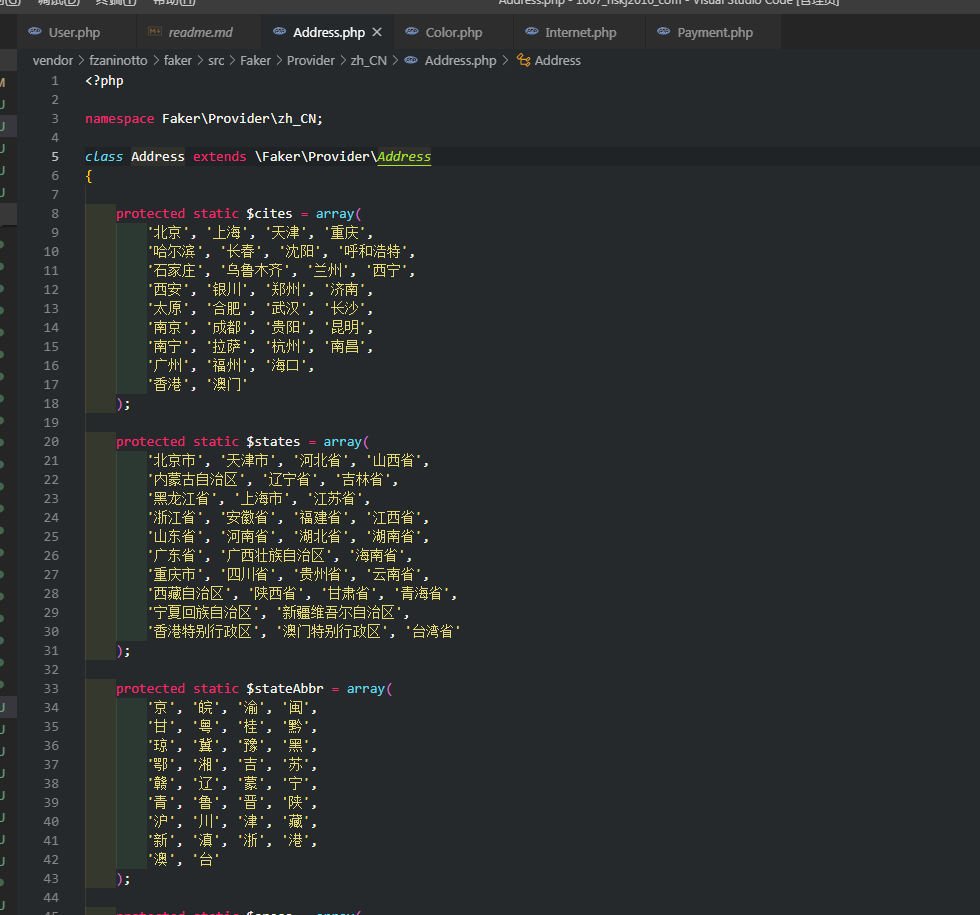

工作上用的是TP框架，每次测试功能的时候都要手动添加测试数据，词穷起名总是起一些test1、test2这种low到爆炸的用户名，这让我很难受。稍微翻阅了一些资料，发现laravel有一个生成测试数据的命令seed。但是Tp没有，只能在其他地方想办法了，于是乎我就找到了Faker。
作为一个正经的开发人员，下载资源文件可不能在百度随便乱搜，要用composer下载
composer require fzaninotto/faker或者去github下载。
写一个测试文件
<?php
require '../vendor/autoload.php';
$faker = Faker\Factory::create('zh_CN'); //选择中文
//可用循环输出多个
echo $faker->name(),'<br>'; //武振国
echo $faker->address(),'<br>'; //昆明滨城区
echo $faker->phonenumber(),'<br>'; //17770379727
echo $faker->email(),'<br>'; //molestias_eveniet@foxmail.com
echo $faker->bank(); //中国农业银行
有了这个类库，测试起来就舒服很多了。
觉得生成的数据不够随机的可以去改源码，例如这里就是address方法生成的城市名数组，可以把你的家乡也加进去！
